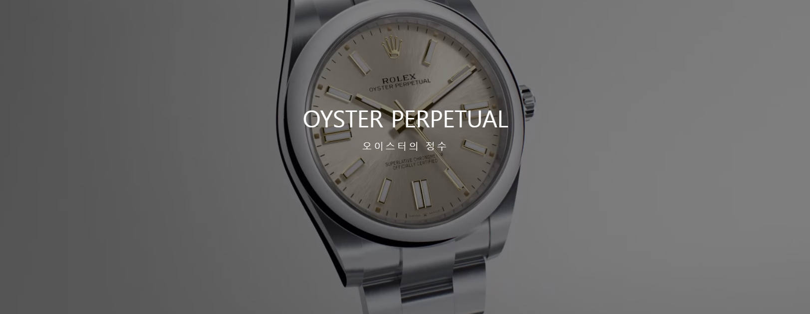
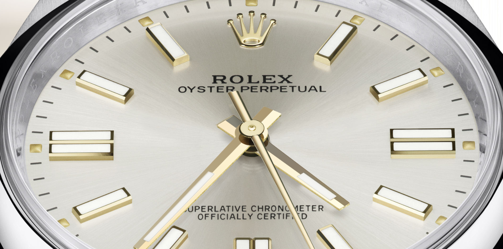
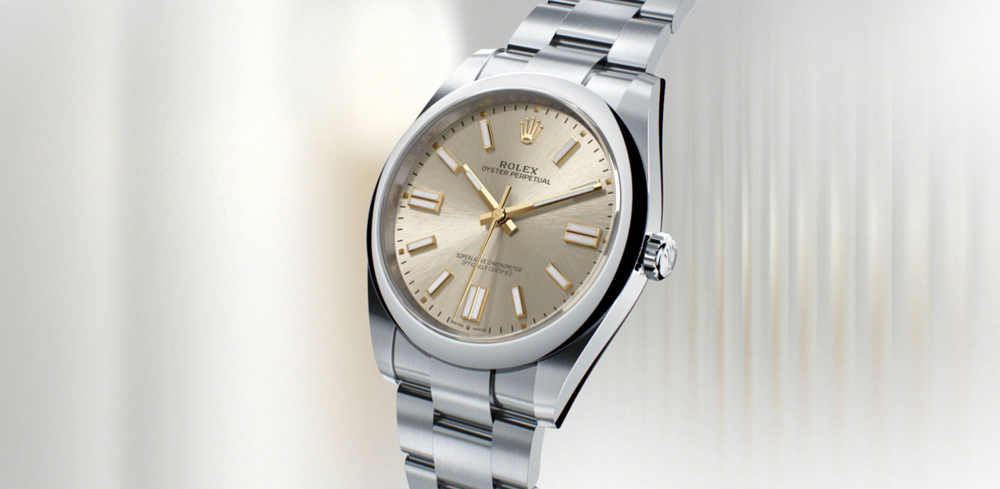
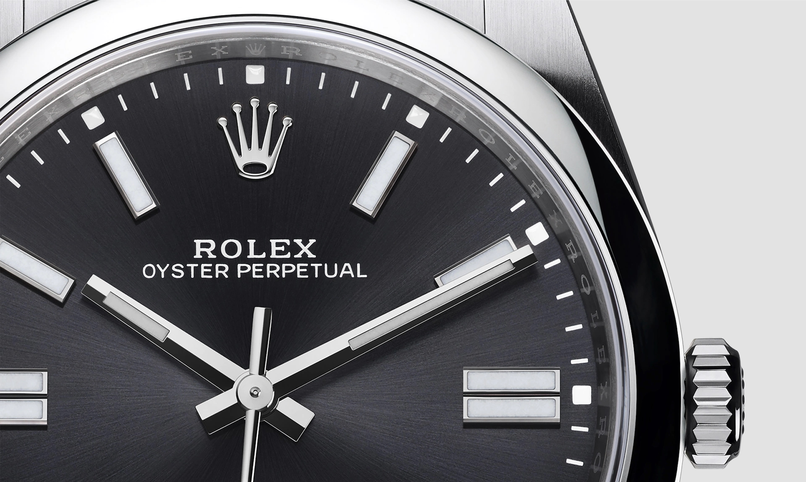

새롭게 선보이는 차세대 오이스터 퍼페츄얼
LB가 기존의 오이스터 퍼페츄얼 컬렉션에 새로운 매력을 더해 선보이는
오이스터 퍼페츄얼 41 및 강렬한 다이얼 색상이 눈길을 끄는 오이스터 퍼페츄얼 36을 처음으로 공개합니다.
케이스 측면과 러그에서 반사되는 빛은 오이스터스틸(Oystersteel)
소재 오이스터 케이스를 더욱 돋보이게 합니다. 41mm와 36mm 모델 모두 돔형 베젤을 갖추고 있습니다.
상품 바로가기

오이스터의 정수
오이스터 퍼페츄얼 라인의 시계는 1926년부터 LB가 오늘날의 명성을 구축하는 데
바탕이 되어준 세계 최초의 방수 손목시계인 오리지널 오이스터의 유산을 충실히 계승하고 있습니다.
오이스터 퍼페츄얼은 크로노미터의 정확성, 방수 오이스터 케이스,
퍼페츄얼 로터를 통한 무브먼트의 셀프 와인딩 등 오이스터 퍼페츄얼 컬렉션의 모든 핵심 기능을 갖추고 있습니다.
오이스터스틸로만 제작되며 세련된 마감 처리와 시, 분, 초 표시 기능을 갖춘 이 시계는 가장 순수한 형태의 크로노미터 손목시계입니다.
새로운 오이스터 퍼페츄얼은 뒷면을 반사 방지 코팅 처리한 사파이어 크리스탈로 최상의 가독성을 제공합니다.

|
클래식 스타일
클래식한 디자인을 입은 오이스터 퍼페츄얼(Oyster Perpetual) 모델은 보편적인 아름다움을 상징하며,
유용한 일상 정보인 시간, 분, 초 정보를 착용자에게 제공합니다.
새로운 디자인의 오이스터 퍼페츄얼 41 신제품 중 한 버전은 18캐럿 옐로우 골드 시계 바늘과 시각 표식을 갖춘 실버 선레이 피니시 다이얼이 특징입니다.
|
크로마라이트 디스플레이
케이스 측면과 러그에서 반사되는 빛은 오이스터스틸(Oystersteel) 소재 오이스터 케이스를 더욱 돋보이게 합니다. 41mm 모델은 돔형 베젤을 갖추고 있습니다.
새로운 오이스터 퍼페츄얼 모델들은 크로마라이트(Chromalight) 디스플레이를 갖추고 있습니다. 시계 바늘과 시각 표식은 어둠 속에서도 오랫동안 유지되는 푸른빛의 야광 물질로 채워져 있습니다.
|
|
LB의 선구적인 오리지널 모델에 기반을 두고,
시간을 초월한 아름다움과 기능이 조화롭게 어우러진 이 시계는 타임피스의 정수를 간직하고 있습니다.
